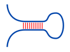

To predict the structure with maximum expected accuracy (MEA) for a given
RNA sequence, the algorithm introduced by
Zhi J. Lu and co-workers (2009)
uses the sequence's base pair and
unpaired probabilities. The approach follows a
Nussinov-like
recursion using
the probabilities derived from
John S. McCaskill's algorithm.
Here, we use our
simplified McCaskill approach
for the probability computation. Therein we apply
a Nussinov-like energy scoring scheme, i.e. each base pair of a structure
contributes a fixed energy term $E_{bp}$ independent of its context.
Furthermore, beside the identification of an optimal MEA structure
via traceback, we provide an exhaustive enumeration of up to 15 suboptimal structures
using the algorithm by
Stefan Wuchty et al. (1999).
For each structure, the according traceback is visualized on selection.

MEA structure prediction
The MEA structure predictions uses the following recursion to fill
a dynamic programming table $M$. An entry $M_{i,j}$ provides the
MEA score for the subsequence $S_{i}..S_{j}$, such that the overall
score is found in $M_{1,n}$ for a sequence of length $n$.
Select a structure from the list or a cell of $M$
to see according tracebacks. Note, the structure list is limited to
the first 15 structures identified via traceback.
Below, we provide a graphical depiction of the selected structure.
Note, the rendering does not support a minimal loop length of 0.
Visualization done with
forna.
Base pairs are given by red edges, the sequence backbone is given by
gray edges.
Probabilities used
Given the partition functions $Q$ and $Q^{bp}$ provided by the
McCaskill
algorithm, we can compute the
probabilities of individual base pairs $(i,j)$ within the structure
ensemble, i.e. $P^{bp}_{i,j} = \sum_{P \ni (i,j)} \exp(-E(P)/RT) / Z$ given by
the sum of the Boltzmann probabilities of all structures that contain the
base pair. For its computation, the following recursion is used, which
covers both the case that $(i,j)$ is an external base pair as well
as that $(i,j)$ is directly enclosed by an outer base pair $(p,q)$.
The following formula is used to compute the probability $P^u_{i}$
that a given sequence position $S_{i}$ is not paired. The probabilities
are directly inferred from the base pair probabilities $P^{bp}$.